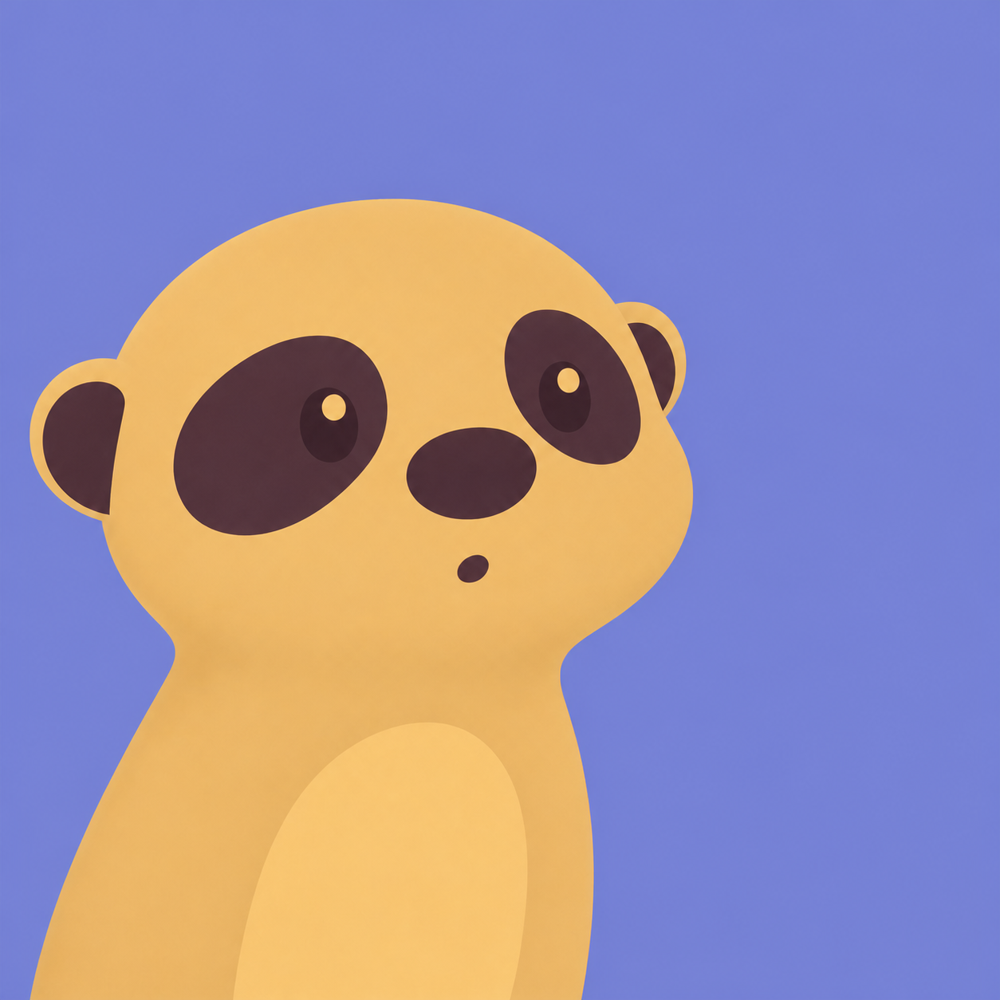

正在连接…
这一页只记录现在代码里是什么样，不做任何改进。所有数值都来自 crates/desktop-ui 和 apps/desktop/src/ui，旁边标了源码位置。 橙色 P1 指向文末的问题清单。调整时，我们以这一页为底稿，再出一份新的设计系统页。
清单
当前所有界面和它们用到的组件。共 3 个页面、8 个弹窗、3 种浮层，加上启动加载。
页面与窗口
| 界面 | 入口 | 源码 |
|---|---|---|
| 启动加载 | 启动时连接 Runtime | components.rs:427 boot_loader |
| 主窗口外壳 | 两栏，侧栏 220（190–300 可拖） | mod.rs:916 |
| 成员页（有成员、无成员、无工作区） | 侧栏「成员」 | pages.rs:175 agents_content |
| 团队页 | 侧栏「团队」 | pages.rs:459 workspace_content |
| 设置页（状态、机器、语言、外观） | 侧栏底部「设置」 | pages.rs:759 settings_content |
弹窗与浮层
| 界面 | 宽 | 源码 |
|---|---|---|
| 新建工作区（两步） | 680 | dialogs.rs:144 |
| 添加 Agent | 820 | dialogs.rs:395 |
| 编辑 Agent 资料（带预览） | 980 | dialogs.rs:395 |
| 启用 Agent（二维码） | 720 | dialogs.rs:1140 |
| 登录飞书 | 440 | feishu_sign_in.rs:102 |
| 添加机器 | 660 | machines.rs:755 |
| 删除成员、移除机器确认 | 440 | dialogs.rs:64, machines.rs:504 |
| 工作区切换菜单、机器「更多」菜单 | 176 / 自适应 | pages.rs:138, machines.rs:706 |
| 表情选择浮层 | 280 | reaction_picker.rs:116 |
| 通知 toast | gpui-component | mod.rs:141 |
组件归属 P15 P14
| 位置 | 组件 | 状态 |
|---|---|---|
| desktop-ui/controls.rs | DesktopButton、DesktopInput、DesktopTextarea、DesktopSelect、DesktopCheckbox、DesktopFormField、DesktopBanner、desktop_settings_group / row / section_title、desktop_choice、DesktopChip、DesktopSteps、DesktopEmptyState、DesktopCenteredMessage | 在用；desktop_card、DesktopBanner::neutral 没有调用方 |
| desktop-ui/layout.rs | DesktopShell、Sidebar、SidebarItem、PaneHeader、ContentPane | 在用；Pane、three_pane、SidebarSectionLabel 只有 ui-preview 用 |
| desktop-ui/dialog.rs | DesktopDialog、Header、Footer、desktop_dialog_button / cancel | 在用 |
| desktop-ui/avatar.rs | DesktopAvatar、DesktopAvatarGroup | Group 只有 ui-preview 用 |
| desktop-ui/theme.rs | 16 个颜色、4 个圆角常量 | RADIUS_ROW 没有调用方 |
| apps/desktop/ui/components.rs | success_panel、provider_tile、workspace_provider_choice、agent_edit_preview、model_field_input、boot_loader、图标映射 | 业务层自己画，直接写像素和颜色 |
| apps/desktop/ui/pages.rs | 成员卡片、运行状态卡、工作区切换器、团队设置面板 | 同上 |
| apps/desktop/ui/machines.rs | machine_glyph、机器行、配对命令块、配对状态行 | 同上 |
| apps/desktop/ui/dialogs.rs | 连接提示面板、启用头部面板、高级设置折叠、环境变量编辑器 | 同上，内联在弹窗里 |
Tokens
theme.rs 里定义的值，以及代码里绕开它们直接写的值。
颜色：theme.rs 里的 16 个
| token | 浅色 | 深色 | 用途 |
|---|
颜色：绕开 token 的原始值 P1
| 值 | 用在 | 源码 | |
|---|---|---|---|
| success 16a34a | 机器在线角标、配对成功点 | machines.rs:17, 955 | |
| 22a447 | 工作区切换器角标 | pages.rs:119 | |
| 238636 | 运行中状态、成功面板勾、步骤已完成文字 | pages.rs:605, components.rs:55, controls.rs | |
| 16803a | 「启用」按钮 | pages.rs:667 | |
| 86c89a | 成功面板边框、步骤已完成边框和连线 | components.rs:47, controls.rs | |
| 9a9a9a | 工作区切换器离线角标 | pages.rs:119 | |
| b7791f | 启动中状态 | pages.rs:608 | |
| dc2626 | 「暂停」按钮 | pages.rs:665 | |
| ff00000a | 错误 banner 底色 | controls.rs DesktopBanner | |
| 1a1a22 | 二维码模块 | components.rs:27 | |
| 4e3038 / 3e2328 / fccc73 | 启动狐獴洞口、眼睛、高光 | components.rs:452, 543, 551 |
绿色共有 5 个值。这些原始值不随深色模式变化。
字号：11 档 P3
| px | 示例 | 用在 |
|---|---|---|
| 24 | 偏好设置 | 设置页正文标题 pages.rs:814 |
| 22 | 还没有队友 | 空状态标题 controls.rs |
| 21 | 小王 | 成员卡片名字、编辑预览名字 pages.rs:372 |
| 20 | 添加机器 | 弹窗标题 dialog.rs:83 |
| 18 | 😀 | 表情（内容，不算字号） |
| 16 | 你的团队 | PaneHeader 标题；large 输入框 14 layout.rs |
| 14 | 正文 | 基础字号、侧栏、按钮、分组标题（500） |
| 13 | 团队名称 | 表单标签、IM 选项、启动文案、「接入方式」 |
| 12 | 选择桌面端的显示语言。 | 说明、hint、chip、步骤、命令块、编辑预览里的 @handle |
| 11 | @xiaowang | 卡片里的 @handle、头像组 +N、成功勾 |
| 10 | 工 | 工作区切换器首字 pages.rs:107 |
字体：.SystemUIFont；等宽 JetBrains Mono，用于 ID、角色、模型、思考等级、团队规约、CLI 路径、环境变量、命令。
圆角：4 个常量，实际 15 种取值 P4
| 值 | 用在 | |
|---|---|---|
| 6 | 工作区首字方块；菜单项（gpui） | |
| 8 | 步骤标签、弹窗关闭按钮 | |
| 10 | RADIUS_CONTROL：按钮、输入框、desktop_choice、命令块；侧栏项写的是字面量 10；RADIUS_ROW 没人用 | |
| 11 | 表单错误框（CONTROL + 1）、表情选项 | |
| 12 | banner、团队页 IM 选项 | |
| 14 | provider_tile、任务开关面板、窗口外框（原生） | |
| 15 | 成功面板、连接提示、启用头部、表情浮层 | |
| 16 | 团队页 IM 面板 | |
| 20 | RADIUS_CARD：设置分组、高级设置 | |
| 25 | RADIUS_MODAL：弹窗 | |
| 26 | 团队页外层分组（覆盖 CARD） | |
| 28 | 成员卡片（覆盖 CARD） | |
| full | chip、@handle、头像、卡片悬浮按钮、表情触发器 |
另有按尺寸比例算的：机器图标 size × 0.28。
尺寸：控件 3 种高度 P2
| 高 | 用在 |
|---|---|
| 26 | SidebarSectionLabel（未用） |
| 28 | 工作区切换器、菜单项 |
| 30 | 侧栏项、desktop_choice |
| 32 | BUTTON_HEIGHT：所有按钮、图标按钮 |
| 36 | 表情触发器、表情选项、头像编辑按钮 |
| 40 | CONTROL_HEIGHT：DesktopInput::new（只有机器改名）、DesktopSelect::new（只有语言） |
| 44 | DesktopInput / Select 的 large（gpui h_11），绝大多数表单 |
| 44 | 团队页 IM 选项 |
| 48 | 高级设置折叠头、表情行 |
| 52 | PaneHeader |
| 68 | 弹窗头 |
| 64 / 84 | 弹窗底（compact / 默认） |
| 76 | 设置行最小高 |
| 82 | provider_tile 最小高 |
宽度 P9
| 类别 | 值 |
|---|---|
| 侧栏 | 220（190–300）；库默认 240（180–420） |
| 页面内容最大宽 | 成员 1120 居中；团队 1040 居中；设置 760 不居中 |
| 弹窗 | 440、660、680、720、820、980 |
| 弹窗高度 | 多数按内容估算后写死（200、260、270、330、405、425、500、560、610、620…） |
| 成员卡片 | 296 × ≥360 |
| 编辑预览栏 | 260 |
| 并排选择器 | 180、190、210 |
间距 P10
| 类别 | 值 |
|---|---|
| gap | 2、4、6、7、8、9、10、11、12、14、16、18、24 |
| 内边距 | 页面 32；弹窗水平 22；设置行 18 / 14；卡片 20；面板 12、14、16、18、22 |
| 纵向节奏 | 分组标题上 18 / 32、下 10；表单 gap 16 或 18；字段内 7 |
层级
设置分组：border，无阴影
浮层：border + shadow_lg
弹窗：shadow_xl
遮罩：浅色 #0000000d，深色 #00000033（gpui-component 默认，没有接入 DesktopTheme）。desktop_card 带 shadow_lg 但没人用。
组件
按功能分组。同一组里出现多个实现的，就是需要收敛的地方。
按钮
DesktopButton
primary
primary + 图标（业务层拼）
outline
ghost
icon
loading
disabled
h 32、min-w 56、px 14、圆角 10、字号 14。弹窗里再包一层改成 min-w 64、px 16 dialog.rs:162
业务层另画的按钮 P8
暂停（红色描边）
启用（绿色描边）
删除确认（黑色主按钮）
卡片悬浮按钮（圆形 raised）
弹窗关闭（圆角 8）
ghost + raised 底
输入
输入框与选择器 P2
MacBook Pro
DesktopInput::new，h 40小王
DesktopInput::large，h 44xiaowang
mono_large聚焦
focus：只换边框色简体中文
DesktopSelect::new，h 40gpt-5.5
model_field_input：前缀图标••••••••••••
密码 + 显示切换回复保持简短。
不确定时先问。
DesktopTextarea::mono（团队规约 h 170、灵魂 h 150）DesktopFormField 与 Checkbox
团队名称
产品组
Bot 用户名
product_xiaowang_bot
已按“工作区_Agent ID_bot”生成；可修改。
Workspace ID
Product-1
只能使用小写字母、数字和下划线。
启用任务系统
启用任务系统
标签 13 secondary，间距 7，hint / 错误 12。错误时外面再套一层 1px 红框（圆角 11），和输入框自身的边框叠成两道。
选择一项 P5
4 套实现，3 种选中态
跟随系统浅色深色
desktop_choice：h 30，选中 = 灰底 设置页主题
飞书
 Telegram
Telegram
workspace_provider_choice：h 44、圆角 12，选中 = 灰底 + 深边框 + 单选点 团队页 IM
飞书
群聊、私聊与任务协作
Telegram
群聊与私聊 Bot
−👍👀✅
reaction_choice：36、圆角 11，选中 = 灰底 + 蓝框
内嵌面板：7 种写法 P6
DesktopBanner::error：p 12、圆角 12、红框红字
✓
success_panel：p 14、圆角 15、绿框Manager Bot 已连接
工作区的 Manager Bot 将负责发起 Bot 创建确认。
飞书尚未连接
完成连接后，这个 Agent 才能在工作区收发消息。
正在创建应用
完成后自动启用。
IM ……
团队页 IM 面板：p 16、圆角 16启用任务系统
任务开关面板：p 14、圆角 14 dialogs.rs:292高级设置
状态 P7
同样是状态，5 种表达
启用
已启用。团队成员可以继续接收协作消息。
产工作区角标 6px（22a447 / 9a9a9a）
机器角标：size × 0.34（success / tertiary）
等待连接
配对：6px 呼吸点 + 文字已暂停
连续 3 次回复失败
DesktopSteps 与 Spinner
✓ 基本信息创建应用授权能力启用
基本信息协作方式
14（按钮、登录）/ 16（启用头部）
步骤的绿色是写死的 86c89a / 22a44714 / 238636；已完成用「✓ 」文字前缀。
身份
头像、chip、handle P13

卡片 112王编辑预览 104，无图回退首字
李默认 32
王李+2
AvatarGroup（未用）claude-sonnet-5-5模型 chip
@xiaowang卡片 handle 11
@xiaowang预览 handle 12
导航
成员
团队
设置
产产品组
工作区切换器（在页头右侧）+ 菜单
侧栏项 h 30、圆角 10（字面量）、图标 16。「团队」用的是 bot 图标。
反馈与空状态
空状态、加载、toast
还没有队友
添加第一个 Agent，开始在 IM 中协作。
正在读取工作区…
DesktopCenteredMessage（min-h 420）
飞书权限已更新
gpui-component Notification
表情选择、二维码、命令块
触发器 36
二维码 188，白底无圆角，
深色模式下仍是白块
深色模式下仍是白块
lankide-machine pair \
wss://192.168.1.8:7443 \
K7Q2-9XPM \
--cert-sha256 3f9a…c21e
场景
每个界面按代码里的结构和尺寸摆出来，窗口 1100 × 720。文案照抄代码。
启动加载
成员页 P11 P12
你的团队
产产品组
你的团队
产产品组
还没有队友
添加第一个 Agent，开始在 IM 中协作。
你的团队
选择工作区
创建第一个工作区
选择飞书或 Telegram，随后添加一起工作的 Agent。
团队页 P6 P11
团队
产产品组
团队名称
产品组
团队规约
回复保持简短。
需求不明确时先追问。
任务完成后在任务清单里勾选。
IM
飞书
Telegram
已有 Agent 后不能更换 IM。
启用任务系统
集中查看团队任务，并明确负责人和协作者。
清单名称
产品组任务
设置页 P3 P12
设置
偏好设置
状态
启用
已启用。团队成员可以继续接收协作消息。
机器
MacBook Pro
本机Mac mini
语言
语言
选择桌面端的显示语言。
简体中文
外观
主题
跟随系统，或固定使用浅色与深色外观。
跟随系统浅色深色
新建工作区 P11
新建工作区
基本信息协作方式
Workspace ID
product
工作区名称
产品组
新建工作区
✓ 基本信息协作方式
选择 IM
飞书
群聊、私聊与任务协作
Telegram
群聊与私聊 Bot
启用任务系统
实际宽 680，这里缩到 560 便于并排。
添加 Agent P11 P5
添加 Agent
基本信息创建应用授权能力启用
接入方式
新建机器人
扫码后在飞书完成创建
绑定已有应用
使用 App ID 与 Secret 接入
Agent ID
xiaowang
显示名称
小王
机器
MacBook Pro
Agent
模型
gpt-5.5
思考等级
medium
编辑 Agent 资料 P6 P13
编辑 Agent 资料
预览
小王
产品经理
把模糊的想法变成清楚的需求。
@xiaowang
启用 Agent 与登录飞书 P7
启用 Agent
✓ 基本信息创建应用授权能力启用
登录飞书
登录后自动创建 Agent 应用。
使用飞书扫码登录
登录飞书
使用飞书扫码登录
添加机器与确认弹窗 P2 P8
添加机器
192.168.1.20:7443
在要添加的机器上运行
lankide-machine pair \
wss://192.168.1.8:7443 \
K7Q2-9XPM \
--cert-sha256 3f9a…c21e
等待连接
删除 小王？
删除后无法恢复，历史记录会保留。
移除 Mac mini？
再次连接需要重新配对。
问题
逐条对照代码确认过。重设计时每一条都要有对应的规则。
- 颜色绕开 token。绿色有 5 个值（16a34a、22a447、238636、16803a、86c89a），红色有 3 个（b91c1c、dc2626、ff00000a），还有一个琥珀 b7791f。这些都写死在业务代码里，深色模式下不变。theme.rs 里没有「状态色」和「品牌色」这两类。 pages.rs:119, 605–672；components.rs:47–55；controls.rs DesktopSteps、DesktopBanner
- 控件高度不统一。按钮 32，默认输入框 40，大号输入框 44，但几乎所有表单都用大号。添加机器里 44 的输入框和 32 的按钮并排，底边对不齐。CONTROL_HEIGHT 实际只有机器改名和语言选择在用。 controls.rs:17–18；machines.rs:823–841
- 字号 11 档，标题层级重复。卡片名字 21、空状态 22、设置页标题 24、弹窗 20、页头 16 互不相关。设置页同时有页头「设置」(16) 和正文标题「偏好设置」(24)。 pages.rs:372, 814, 854；controls.rs DesktopEmptyState
- 圆角 15 种取值。常量只有 4 个，其余都是字面量：6、8、11、12、14、15、16、26、28。同一类内嵌面板分别用了 12、14、15、16、20。RADIUS_ROW 定义了没人用，侧栏项又写了字面量 10。
- 「选一个」有 4 套实现。desktop_choice、workspace_provider_choice、provider_tile、reaction_choice。选中态有三种：灰底；灰底 + 深边框 + 单选点；灰底 + 蓝框。同样是选飞书或 Telegram，新建弹窗和团队页长得完全不同。 controls.rs desktop_choice；components.rs:122, 160；reaction_picker.rs:159
- 内嵌面板有 7 种写法。内边距 12 / 14 / 16 / 18，圆角 12 / 14 / 15 / 16 / 20，有的有边框有的没有。团队页是分组里套 raised 面板，三层嵌套。 pages.rs:479–502；dialogs.rs:292, 660, 909, 1246；components.rs:41
- 状态表达不一致。运行状态用 8px 点加彩色文字加说明；工作区角标 6px；机器角标按比例 0.34；配对用呼吸点；成员暂停是纯文字「已暂停」；步骤用「✓ 」文字前缀。没有统一的状态点组件。
- 危险操作没有统一样式。删除和移除用黑色主按钮，暂停用自定义红色描边，启用用自定义绿色描边。 dialogs.rs:128；machines.rs:565；pages.rs:664–745
- 尺寸随手写。弹窗宽 6 种（440 / 660 / 680 / 720 / 820 / 980），高度大多按内容估算后写死，内容一变就要重算。页面最大宽 1120 / 1040 / 760，设置页还不居中。
- 间距不在网格上。gap 用了 13 种值，含 7、9、11；弹窗水平内边距 22。
- 文案露出内部概念。Agent、Agent ID、Workspace ID、IM、App ID / Secret、Bot、Manager Bot、CLI 路径直接出现在界面上。hint 在解释内部规则（「已按“工作区_Agent ID_bot”生成」「已有 Agent 后不能更换 IM。」）。「队友」「成员」「团队」「工作区」混用。几乎每个设置行都带一句说明。 dialogs.rs:746, 781, 816, 1109–1127, 1383；pages.rs:74, 153, 228, 271, 529
- 信息架构错位。侧栏「成员」进去的标题是「你的团队」，「团队」进去的标题是「团队」，图标还是 bot。团队的运行状态放在个人「设置 → 状态」里。机器也在设置里。
- 同一元素两套尺寸。@handle 在卡片里是 11 号、secondary 色，在编辑预览里是 12 号、主色；头像 112 和 104；名字和岗位的间距也不同。卡片和预览是两份代码。 pages.rs:427–437；components.rs:400–479
- 有组件没人用。desktop_card、DesktopBanner::neutral、Pane、three_pane、SidebarSectionLabel、DesktopAvatarGroup、RADIUS_ROW。
- 业务层自己画组件。成员卡片、运行状态卡、机器行、配对命令块、成功面板、各种选择项都在 apps/desktop 里直接写像素和颜色，desktop-ui 改了也影响不到它们。带图标的主按钮、折叠面板也要业务层自己拼，折叠头还得手动修内圆角。 pages.rs:288–757；components.rs；machines.rs；dialogs.rs:917–925